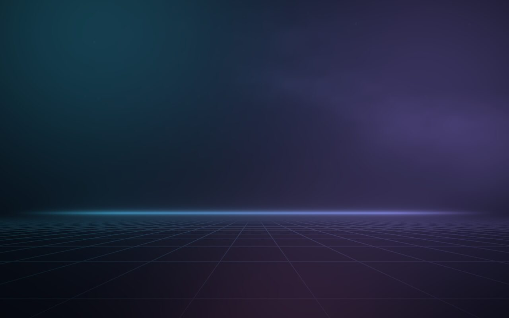
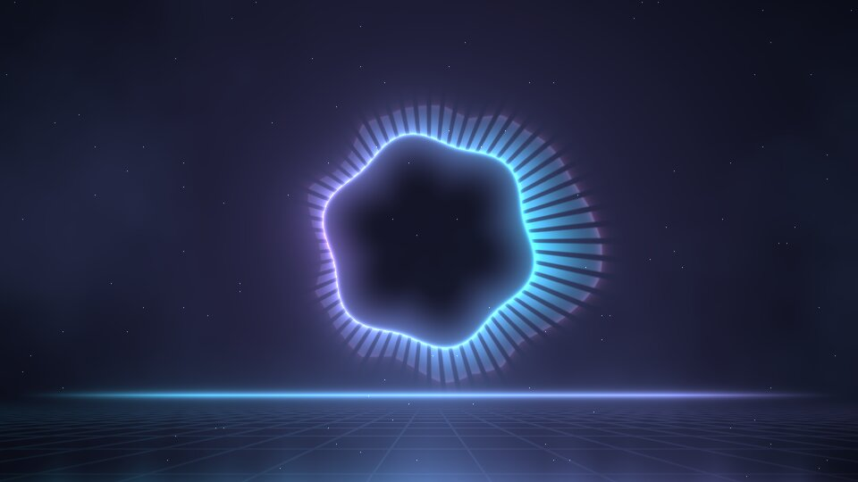
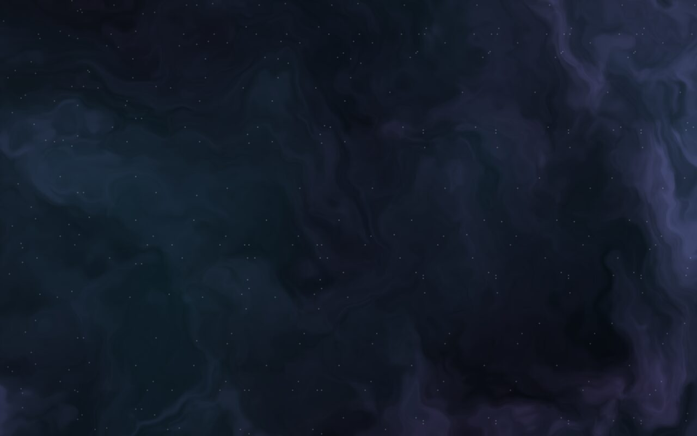
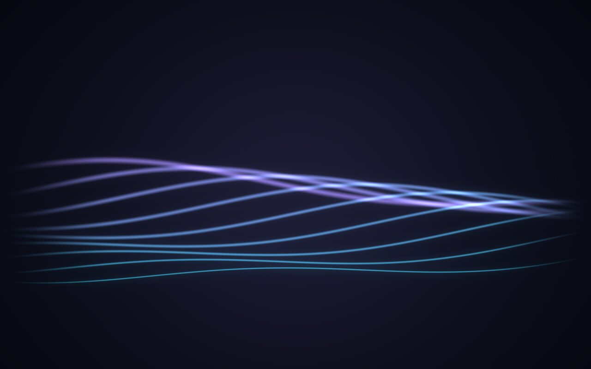
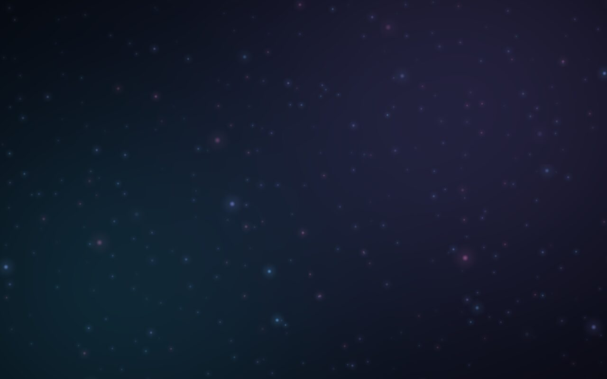

Desktop
- Lançador que acha apps, arquivos, comandos antigos e faz contas
- Visão geral das janelas com miniaturas ao vivo
- Calendário, agenda, clima, notas e modo foco com Pomodoro
- Histórico do que você copiou e seletor de emojis em português
Um sistema com cara própria. Vidro escuro, luz ciano e violeta, wallpapers que rodam na placa de vídeo e dançam com a música, e apps pensados para ele. Por baixo, a força e os pacotes do Arch.
sudo pacman -S cypheros
Do Arch ficam o kernel, o pacman e o systemd. A barra, o lançador, as notificações, a tela de login, o terminal e os apps são próprios, no mesmo visual.
cypher restaurarCinco cenas escritas como shaders. Elas seguem as cores do tema e, quando uma música toca, pulsam com o grave.





Também aceita imagem ou vídeo seu: cypher wallpaper video ~/Vídeos/fundo.mp4
A tecla SUPER (a do logo) abre quase tudo.
Instale do zero pela ISO, com pontos de restauração já ligados, ou transforme o Arch que você já usa.
sdX pelo seu pendrive (confira com lsblk).sudo dd if=cypheros-x86_64.iso of=/dev/sdX bs=4M status=progress oflag=sync
cypher).Precisa de computador com UEFI e internet durante a instalação.
sudo ./repo/ativar-repositorio.sh
sudo pacman -S cypheros
cypher-aplicar-padrao
Pontos de restauração precisam do disco em btrfs. O resto funciona em qualquer Arch.
Instale temas feitos por outras pessoas com um clique na Central, ou exporte o seu visual e mande para a loja.